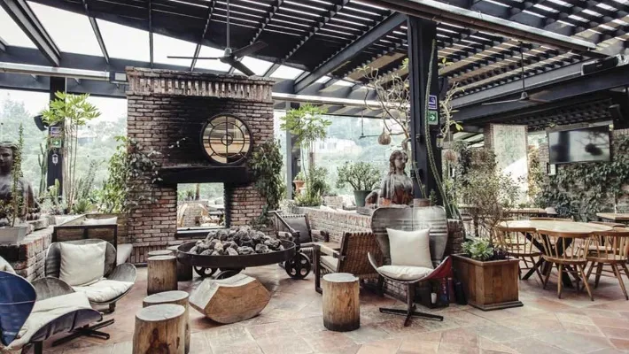

Mirazur
Mirazur Asador Etxebarri
Asador Etxebarri Geranium
Geranium Mugaritz
Mugaritz Inicio
Inicio
Este restaurante se localiza en España, Bizkaia y su especializada es la parrilla. El chef de la cian de este restaurante es Bittor Arguinzoniz y este restaurante tiene 1 estrella Michelin.
Todos los platillos de este lugar se cocinan a la leña, en el fuego, o a las brasas de manera que el sabor ahumado es una constante. Debido a las técnicas utilizadas sólo pueden sentar a la mesa un máximo de 30 comensales por servicio.
| Mirazur |
Asador Etxebarri |
Geranium |
| Central Restaurante | Mugaritz |
Inicio |